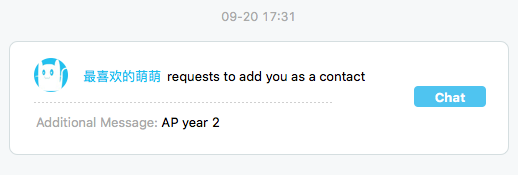
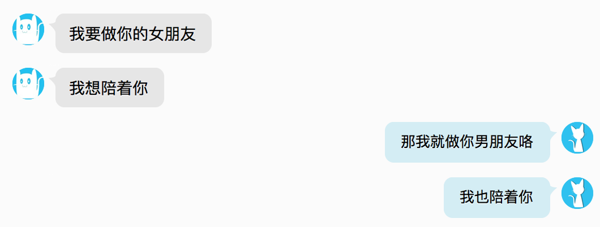
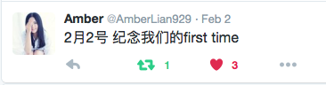
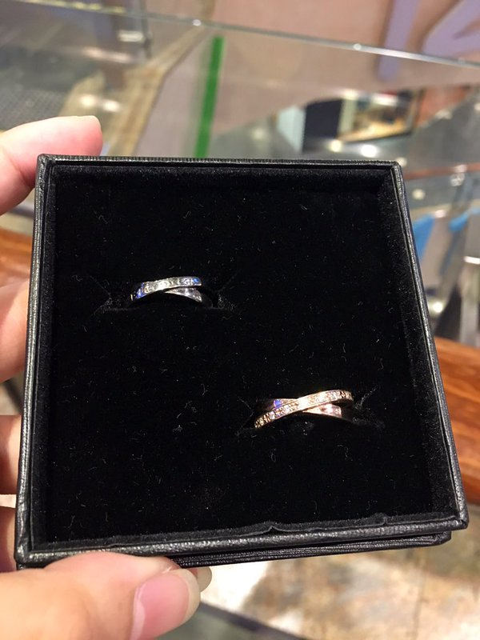

这一天是一切的开始
我们的故事，由此展开
 Sep 20 2015出于好玩(?)，一开始被误认为是女生的我并没有马上纠正你，直到几个月后的这天才告诉你真相。没想到这次坦白让我们迅速熟络起来，在你的坚持下我们也开始以姐姐妹妹称呼对方。交换照片，互通电话，我们也逐渐地喜欢上了彼此
Jan 20 2016这就是你所说的「缘分」吧，介绍我给你认识的那个人，也伤透了你的心，也在这个晚上让你独自哭泣。而正因为此，我才笨拙地安慰你，我们才向彼此表白自己的心意。「我喜欢你，不是妹妹那种喜欢 」
 Jan 29 2016那一晚，我们手牵手，沿着维港散了步，坐上天星小轮，也遗憾地错过了旺角摩天轮。意料之外地，我们误打误撞地走到了终审法院的门前。在这个象征法律威严的地方，我们久久地吻着对方，承诺永远陪伴着彼此，决不分离
Jan 31 2016一起在床上依偎着看『玉子市场的爱情故事』的我们，终于忍受不住彼此的诱惑，将自己身体的第一次给了对方
 Feb 2 2016这一晚，在朗豪坊，我们为彼此的无名指戴上了刻了对方名字的戒指。「这辈子，就决定是你了」
 Feb 4 2016虽然我有些闷，有些过于理性，有些缺乏感情，但请永远不要怀疑我想和你在一起的真心，也请不要因为别人的三言两语就不开心甚至对我们的关系产生怀疑。让我们就这样牵着彼此的手，完全地信任对方爱护对方，一起好好度过这一生，好吗？
我们生命里的每一天...